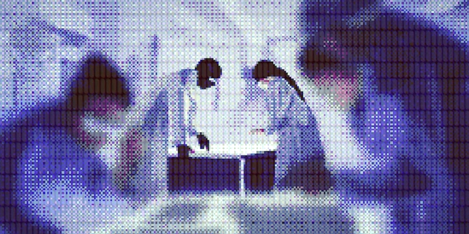
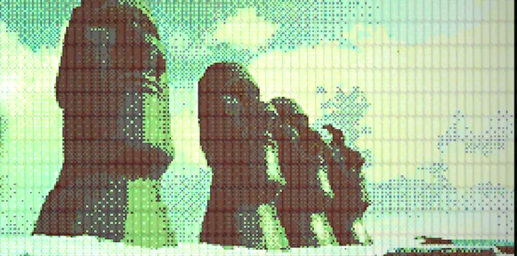

LOS HUMANOS SUPERVIVIENTES DESIGNARON A VARIOS NOTABLES CIENTÍFICOS COMO LÍDERES DE SU NUEVA SOCIEDAD, CON LA ESPERANZA DE NO REPETIR LOS ERRORES DEL PASADO. CON GRAN EMPEÑO, ESTOS ACOMETIERON LA TITÁNICA TAREA DE ESTABLECER UN ECOSISTEMA SOSTENIBLE PARA LA VIDA HUMANA EN EL INTERIOR DE LA CAVERNA. DECIDIERON QUE ESTA NUEVA SOCIEDAD SE LLAMARÍA «ALTERNA» Y COMENZARON A RECREAR TODO LO QUE ANTES HABÍA EXISTIDO EN EL PLANETA.
EN LA RECONSTRUCCIÓN SE EMPLEARON LAS MÁS AVANZADAS TÉCNICAS, COMO POR EJEMPLO IMPRESORAS 3D DE GRANDÍSIMA ESCALA. DEJÁNDOSE GUIAR POR LA NOSTALGIA, REPRODUJERON EN ALTERNA TODO TIPO DE ARTEFACTOS QUE ANTIGUAMENTE HABÍA EXISTIDO EN LA SUPERFICIE.
Y SE DISEÑÓ ADEMÁS UN ROBUSTO SISTEMA DE GESTIÓN DE INFORMACIÓN CON OBJETO DE ALMACENAR DE FORMA PERMANENTE E IMBORRABLE TODOS LOS REGISTROS DEL CONOCIMIENTO HUMANO. UNA COMPUTADORA DOTADA DE RACIOCINIO SERÍA LA ENCARGADA DE REGISTRAR E INTERPRETAR TODO LO RELATIVO A LA ACTIVIDAD HUMANA EN ESTE SISTEMA. DE ESTA FORMA NACIÓ «O.R.C.A», CUYO NOMBRE SIGNIFICA «ORGANIZADORA DE REGISTROS COMPUTARIZADOS DE ALTERNA».